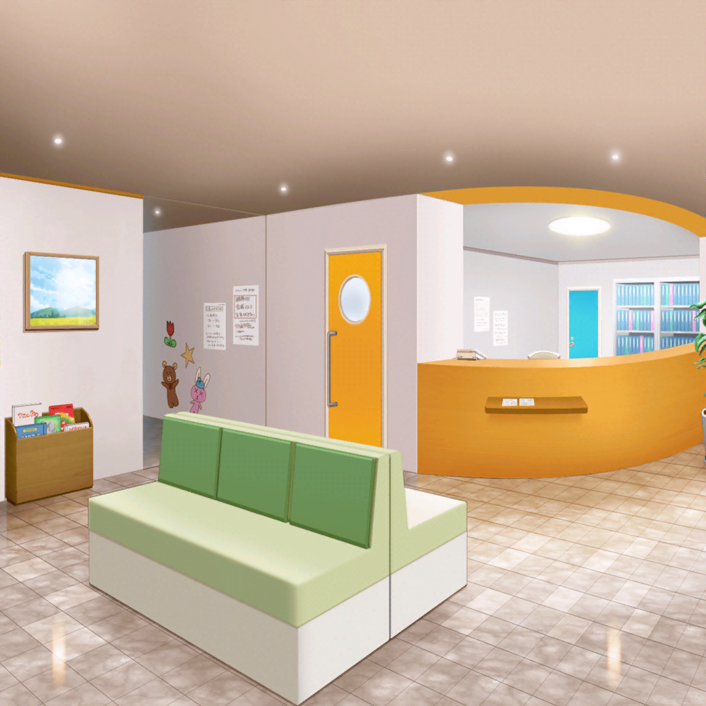

病院 ロビー
はぐみ
い、以上っ。
ハロー、ハッピーワールド！ でしたっ！
あかり
…………
小児科病棟の子供たち
わーーっ。すごーーい！
またやってねーーーっ
ミッシェル
……じゃ。
あたしたちはほら。
片付けでもしますかねっ
こころ
えっ。ちょっと待って、
あかりは……ムグッ！！
花音
こころちゃん、みんなで決めてたの、
ほら、思い出して
薫
忘れんぼさん。
そんなところも素敵だね
あかり
ね……ねえ！
ちょっと待って。
ハロー、ハッピーワールド！ のひとたち
看護師
あら。あかりちゃん、車いす……
あかり
自分で押せるっ。
……ねぇっ
はぐみ
う、うんっ。
どうしたの、あかりっ
あかり
あの、こころって人が言ってた、
『なんでも出来る』って、ほんとう？
ミッシェル
（……はぐみっ、がんばれ……！）
はぐみ
ほ、本当だよっ。
ほら、さっきの魔法のことばを唱えてみてよっ
あかり
……『ハピネスっ！ ハピィーマジカルっ♪』？
わわわっ！！
あかり
は、はぐみちゃんのポッケから、
……ハッピーレンジャー！
ハッピーレンジャーのフィギュアだぁっ！
はぐみ
ねっ、ねっ！
元々ね、みんなもあかりも、
やろうと思えばなーんだって出来るんだよっ
はぐみ
でもそれを忘れちゃってる時があって、
この、こころんの魔法のコトバを唱えると
それを思いだせるの！
あかり
これって……何回やってもいいの？
はぐみ
も、もちろんだよっ
あかり
じゃあ……じゃあ。
……っ。目、閉じても効く？
はぐみ
うん、ばっちり、効く効く！
花音・ミッシェル
（あかり（ちゃん）……）
こころ・薫
（行け……っ！）
はぐみ
（あかり、がんばれ……っ！）
あかり
……『ハピネスっ！ ハピィーマジカルっ♪』……
あかり
……？ あ
はぐみ
……っ！ あかり、あかり！！
立ってる……！！
あかり、立ってるよ……！！
あかり
あ……かり……
立ってる……
立てたんだ……！ あっ
はぐみ
大丈夫！？ ふらっとしてるっ
あかり
うん。ずっと立ってなかったから。
リハビリ……してなかったから……だね
あかり
でも、大丈夫だよはぐみちゃん。
だって、先生も看護師さんもずっとね、
リハビリすれば、歩けるようになるって
はぐみ
あかり……！ じゃ、じゃあ、
リハビリできそうってこと？
あかり
いっつもはぐみちゃん、言ってるじゃん。
うちのソフトボールチームは、
根性根性！ でしょ？
はぐみ
あかり……！
うん……！
こころ
これでわかったかしら。
できると思えば、なんでも出来るってこと！
あかり
うん。ありがとうっ。
……でも、お姉ちゃんたち
あかり
小児病棟のほかにも、こういう病院には、
あかりみたいな人、たくさんいるよ
ミッシェル
……現実ってやつだね
あかり
だからあかり、リハビリがんばって、
前みたいに歩けるようになったら、
この魔法のコトバで、その人たちを笑顔にする！
はぐみ
あかり……すごいね！
超名案だよ、それ！ 絶対はぐみも手伝う！

数日後
弦巻家 応接室
こころ
なんだかハロー、ハッピーワールド！ 宛てに、
手紙が届いたわよ！
差出人は……あかりとその家族と、あの看護師さんね
美咲
ライブから一週間か
はぐみ
リハビリ順調なのかな？
そろそろまた会いに行きたい〜っ
薫
看護師の彼女からは、感謝の手紙だ。
字から心の美しさがにじみ出ているね……
花音
こっちは……あかりちゃんと家族から。
『娘に勇気と希望を取り戻してくれてありがとう』だって
はぐみ
あ、これ……あかりの字だ。
『誰かに元気や勇気をあげる為に、大きくなったら
はぐみちゃんのバンドに入ろうと思いました』？
美咲
ちょ！ それはダメでしょ。
こんな変な団体に入ったらあの子の将来が！
はぐみ
でも続きがあるよ。『だけど、あたしが魔法のコトバを唱えて
困ってる子に話しかけても、魔法の力は出せなくて……』
はぐみ
『看護師さんに聞いたら、人を救う方法は色々あるよって、
教えてくれました』
はぐみ
えっと……『だからあたしは、大きくなったら
看護師さんと同じ病院で働く人になります。
はぐみちゃん達もバンド頑張って下さい』だって
美咲
よかった……
一人の少女が別の意味でも救われた……
はぐみ
ねえ。
……はぐみたちって、あかりを救ったのかな？
美咲
まぁ、捉えようによっては……？
こころ
そんな訳ないじゃない！
忘れたの？ あかりもあたし達も、
世界の人たちはみーんな初めから、ヒーローなのよっ
美咲・花音
——！
薫・はぐみ
！
美咲
誰だって自分で自分を救える……
あかりはそれを思い出しただけ……か
なーんか、おとぎばなしっぽいなぁ
こころ
おとぎ話じゃないわよ！
はぐみ
そうだよ！
こころんは本当にあかりを救ったんだよ！
こころ
だから救ってないのよ？
はぐみ
あ、そうだった！
みんなで思い出させたんだった。
えへへ、ちょっと難しいね～
美咲
……まぁでもそういうの……嫌いじゃないわ